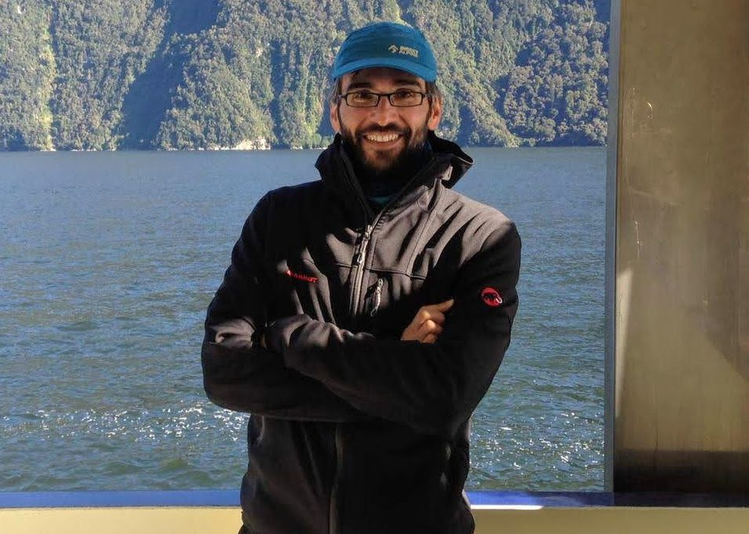
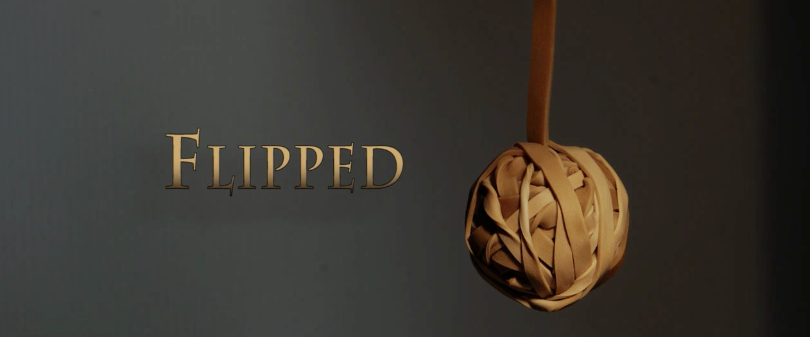
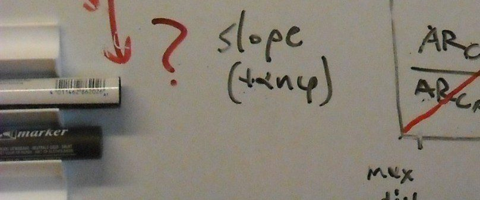
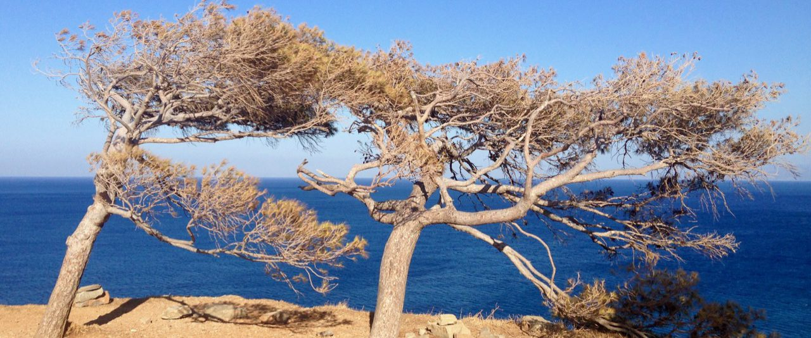
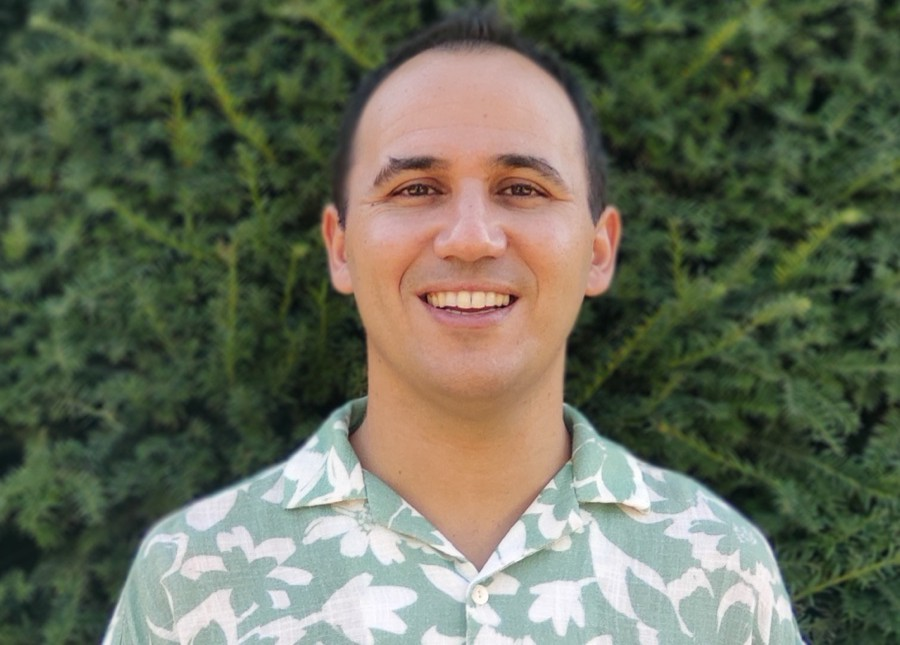
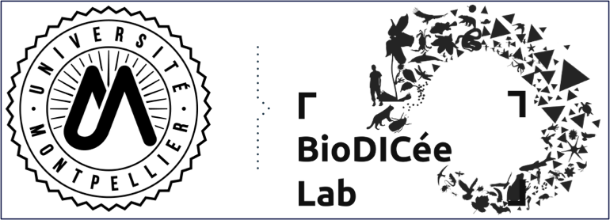
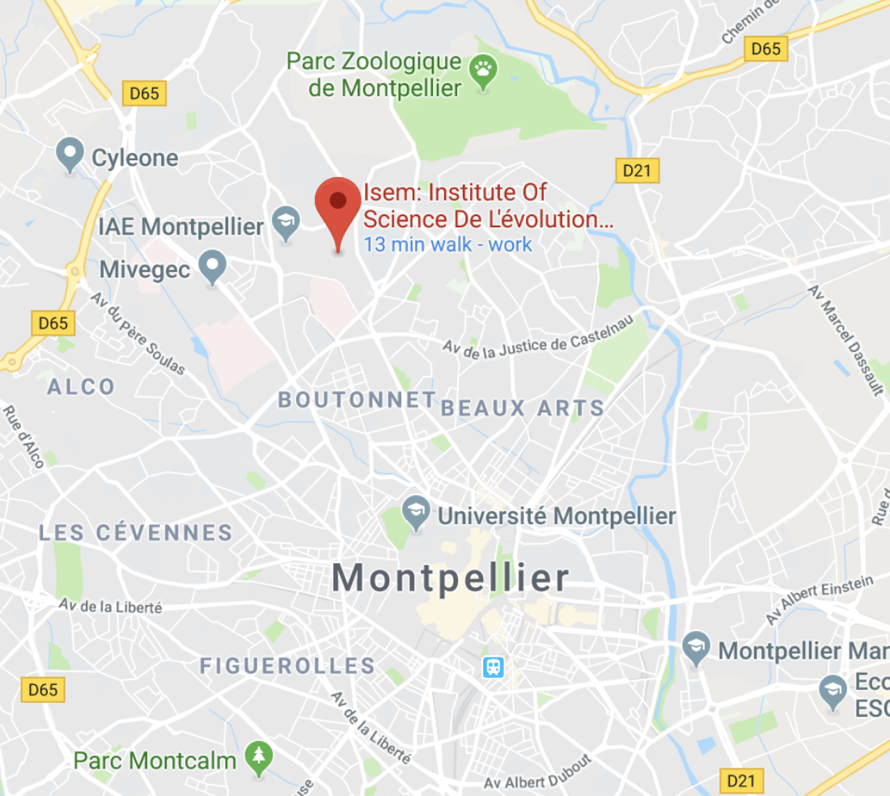
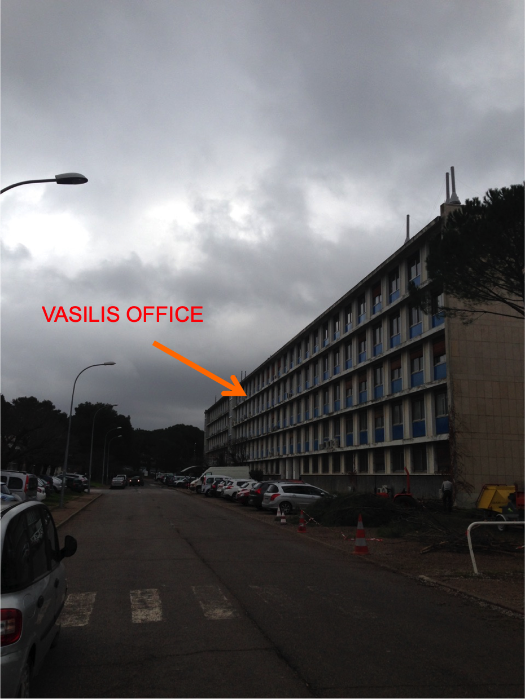

QUANTIFYING RESILIENCE
in ecology and evolution under global environmental change

I am a senior CNRS researcher in ecology at ISEM, the Institute of Evolution at Montpellier University in France. I received my PhD in theoretical ecology from Wageningen University.
I am interested in ecological stability, tipping points and the effects of eco-evolutionary feedbacks on ecosystem resilience under global change. I develop and test indicators of resilience (early-warning signals) in a wide range of systems, from ecology and biology to climate and psychology.
I am an active member of SPARCS (the Synergy Program for Analyzing Resilience and Critical Transitions) and of Open Scholar, a scholar-governed model for academic publication and evaluation.
Since 2025, I have served as Representative (Editor-in-Chief) of Peer Community in Ecology (PCI Ecology), a non-profit open-science organization of scientists that evaluates, recommends and publishes research preprints in free open access.
Research

Resilience and Tipping points
Understanding resilience and abrupt shifts in ecology and earth sciences, climate and human systems at different temporal and spatial scales

Early-Warning Signals
Methods and tools for operationalizing resilience indicators to quantify the risk of tipping points for research and management

Ecological dynamics:
trends and patterns
Analysis of trends and statistical patterns in ecological and environmental variables to map system vulnerability
Eco-evolutionary tipping points
A fundamental theoretical understanding that integrates evolutionary processes in ecological models of ecosystem tipping points
Selected publications
Identifying fish populations prone to abrupt shifts via dynamical footprint analysis
Cano AV, Jensen OP, Dakos V (2025) Proceedings of the National Academy of Sciences USA, 122(34), e2505461122. doi:10.1073/pnas.2505461122
Ecosystem tipping points in an evolving world
Dakos V, Matthews B, Hendry AP, Levine J, Loeuille N, Norberg J, Nosil P, Scheffer M, De Meester L (2019). Nature Ecology & Evolution 3(3), 355–362. doi:10.1038/s41559-019-0797-2
Slowing down as an early warning signal for abrupt climate change
Dakos V, Scheffer M, van Nes EH, Brovkin V, Petoukhov V, Held H (2008) Proceedings of the National Academy of Science USA, 105(38), 14308-14312. doi:10.1073/pnas.0802430105
Advancing our understanding of ecological stability
Kéfi S, Domínguez‐García V, Donohue I, Fontaine C, Thébault E, Dakos V (2019). Ecology Letters, 22: 1349-1356. doi:10.1111/ele.13340
Methods for Detecting Early Warnings of Critical Transitions in Time Series Illustrated Using Simulated Ecological Data
Dakos V, Carpenter SR, Brock WA, Ellison AM, Guttal V, Ives AR, Kéfi S, Livina V, Seekell DA, van Nes EH, Scheffer M (2012) PLoS ONE 7(7): e41010. doi:10.1371/journal.pone.0041010
People
We are a small team but we are always open if you want to join us for a postdoc, phd, master or short research stays.
collaborators and past lab members
Emilio MORA
postdoc
Emilio is working on the ANR-ENEMYCOCKTAIL project modelling multitrophic interactions to design better pest biocontrol practices.
Krishna GIRISH
phd
Krishna is working on the EU-CLIMTIP project aiming to quantify species risk to extinction to future climatic tipping points using niche modelling.

Jose SANABRIA
postdoc
Jose uses quantitative approaches to understand how marine ecosystems respond to human and climatic pressures and how this knowledge can support their recovery and conservation.
Latest News


Contact
BioDICée team
Institut des Sciences de l’Evolution de Montpellier (ISEM)
CNRS UMR 5554, Building 22, 2nd floor
Université de Montpellier – CC065,
place Eugène Bataillon
34095 Montpellier cedex 05, France
Tel: +33 4 67 14 40 81
vasilis.dakos [at] umontpellier.fr


